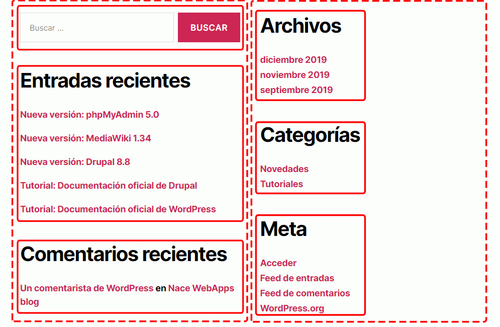
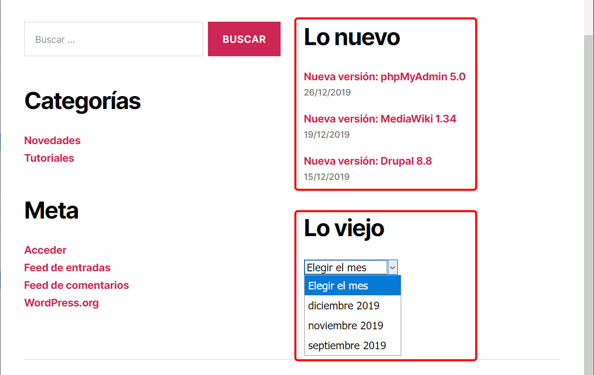
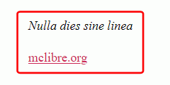

En esta lección se proponen ejercicios para conocer y utilizar WordPress. Se pueden consultar las soluciones de estos ejercicios de WordPress, aunque se recomienda intentar realizarlos primero sin recurrir a estas soluciones.
El objetivo de esta página de ejercicios es practicar el uso de widgets y plugins en WordPress.
Los plugins permiten ampliar la funcionalidad de WordPress como blog o incluso transformar WordPress en otro tipo de página web (CMS, tienda, etc.).
Los plugins se instalan y desinstalan en WordPress desde el menú Plugins.
Los plugins propuestos en esta página estaban disponibles para WordPress 4.7 en el momento de redactar estos ejercicios (enero de 2017). Es posible que en futuro esos plugins no estén disponibles para versiones posteriores de WordPress, o incluso hayan dejado de estar disponibles para cualquier versión. En ese caso, se pueden utilizar otros plugins de los disponibles en ese momento.
WordPress (3) 1 - Widgets
Los widgets son los elementos que se pueden incluir en las barras laterales y en la parte inferior. En el tema Twenty Seventeen hay un área principal de widgets y dos secundarias, como había en el tema Twenty Sixteen.
De forma predeterminada, están activados los widgets Buscar, Entradas recientes, Comentarios recientes, Archivos, Categoría y Meta.

Distribuya los widgets predeterminados de otra manera, por ejemplo en la parte inferior.

Devuelva los widgets a la barra lateral, elimine el widget de Comentarios recientes y cambie el título de los widgets de Entradas recientes y Archivos.
Active los widgets Calendario y Nube de etiquetas y compruebe su funcionamiento.
Active el widget RSS. La fuente será https://wordpress.org/news/ y mostrará los dos últimos feeds con su fecha.

Widget Texto
Active el widget Texto. Configúrelo para que contenga algún lema apropiado al tema o espíritu del blog y algún enlace a páginas importantes.
Configúrelo para insertar una imagen que enlace a algún sitio.
Widget Meta.
Configure el widget Meta y modifique su código fuente (haga antes una copia de seguridad del archivo original) para dejar el widget con sólo dos opciones (que se convierten en tres al entrar como usuario registrado):
Ayuda
El código fuente PHP de los widgets en general se encuentra en el fichero \wordpress\wp-includes\default-widgets.php, que contiene referencias a los ficheros correspondientes a cada uno de los widgets.
WordPress (3) 2 - Insertar contenido externo
WordPress permite insertar en sus páginas contenido alojado en otros servicios, directamente o mediante plugins.
En el caso de unos cuantos servicios muy populares (Youtube, Scribbd, Issuu, Flickr, TED, etc. en la página https://codex.wordpress.org/Embeds hay una lista completa), basta con copiar la dirección del recurso y WordPress lo muestra automáticamente.
Cree algunas entradas con elementos insertados. Por ejemplo:
Nota: A veces algunos enlaces no se insertan correctamente, no sé por qué. Por ejemplo, el enlace a TuxInfo nº 71 un día se podía insertar y otro día no.
Nota: Este plugin tiene funcionalidades gratuitas y otras de pago.
Configure YouTube embed plugin para que, por ejemplo, no se vea el título de los vídeos, que la franja de controles se vea en gris, que oculte los controles cuando se está reproduciendo el vídeo (en la captura se ven los controles porque el ratón estaba sobre el vídeo) y que el tamaño se ajuste mejor al contenido.
Nota: Actualmente (enero de 2016) este plugin no está probado con WordPress 4.4. Compruebe si funciona o no.
Para otros tipos de contenido, hace falta instalar plugins específicos:
PDF
Pruebe estos plugins creando entradas con pdfs insertados y compare su funcionalidad. Los pdf a insertar pueden ser alguna de las revistas de la biblioteca de revistas de mclibre.
WordPress incluye una opción de configuración de los comentarios llamada "Lista negra de comentarios".
Añada en la lista negra algunos términos que en ningún caso queremos ver en los comentarios. Compruebe que funciona y que los comentarios que contienen esos términos no son publicados.
El plugin Disable Comments permite deshabilitar los comentarios globalmente o por tipo de elemento.
Instale algún plug-in gratuito relacionado con estos temas:
Desde 2002, la Directiva europea 2002/58/EC (modificada en 2009 por la Directiva 2009/136/EC) requiere la autorización del usuario para el uso de cookies en los sitios web. Este plugin ayuda al cumplimiento de esta directiva.
Por motivos de seguridad, WordPress no permite la subida de imágenes SVG (como se comenta en el ticket de WordPress 24251, el problema es que al poder incluir JavaScript pueden ser una vía de ataque al servidor).